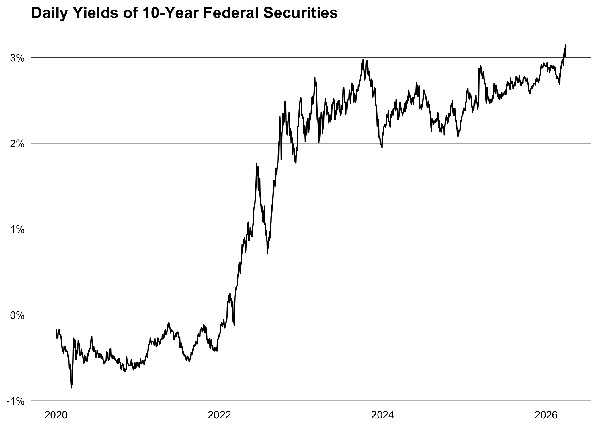

bbk is minimal R client for the following APIs:
In the future, it may be extended to other central banks and financial institutions. Feel free to open an issue if you have a specific request.
Installation
You can install the released version of bbk from CRAN with:
install.packages("bbk")And the development version from GitHub with:
# install.packages("pak")
pak::pak("m-muecke/bbk")Usage
bbk functions are prefixed with either bbk_ or ecb_ depending on the origin of the data and follow the naming convention of the APIs. The usual workflow would be to search for the time series key on the ECB Portal or Bundesbank website and then use it to retrieve the data.
library(bbk)
# fetch 10 year daily yield curve
yield_curve <- bbk_data(
flow = "BBSIS",
key = "D.I.ZAR.ZI.EUR.S1311.B.A604.R10XX.R.A.A._Z._Z.A",
start_period = "2020-01-01"
)
#> [1] "data/BBSIS/D.I.ZAR.ZI.EUR.S1311.B.A604.R10XX.R.A.A._Z._Z.A"
str(yield_curve)
#> Classes 'data.table' and 'data.frame': 1353 obs. of 25 variables:
#> $ date : Date, format: "2020-01-02" "2020-01-03" ...
#> $ key : chr "BBSIS.D.I.ZAR.ZI.EUR.S1311.B.A604.R10XX.R.A.A._Z._Z."..
#> $ value : num -0.16 -0.27 -0.27 -0.27 -0.27 -0.22 -0.2 -0.19 -0.17 -..
#> $ title : chr "Yields, derived from the term structure of interest "..
#> $ freq : chr "daily" "daily" "daily" "daily" ...
#> $ bearer_reg : chr "I" "I" "I" "I" ...
#> $ item : chr "ZAR" "ZAR" "ZAR" "ZAR" ...
#> $ valuation : chr "ZI" "ZI" "ZI" "ZI" ...
#> $ currency : chr "EUR" "EUR" "EUR" "EUR" ...
#> $ issuer_class : chr "S1311" "S1311" "S1311" "S1311" ...
#> $ listed_sub : chr "B" "B" "B" "B" ...
#> $ security_class: chr "A604" "A604" "A604" "A604" ...
#> $ maturity : chr "R10XX" "R10XX" "R10XX" "R10XX" ...
#> $ interest_type : chr "R" "R" "R" "R" ...
#> $ interest_rate : chr "A" "A" "A" "A" ...
#> $ redemption : chr "A" "A" "A" "A" ...
#> $ certificate : chr "_Z" "_Z" "_Z" "_Z" ...
#> $ coverage : chr "_Z" "_Z" "_Z" "_Z" ...
#> $ rating : chr "A" "A" "A" "A" ...
#> $ time_format : chr "P1D" "P1D" "P1D" "P1D" ...
#> $ decimals : int 2 2 2 2 2 2 2 2 2 2 ...
#> $ unit : chr "PROZENT" "PROZENT" "PROZENT" "PROZENT" ...
#> $ unit_mult : chr "0" "0" "0" "0" ...
#> $ category : chr "GKZR" "GKZR" "GKZR" "GKZR" ...
#> $ unit_eng : chr "percent" "percent" "percent" "percent" ...
#> - attr(*, ".internal.selfref")=<externalptr>
Related work
- SNBdata: R package for downloading data from the Swiss National Bank (SNB).
- bundesbank: R scripts for downloading time-series data from the Bundesbank.
- ecb: R interface to the European Central Bank’s Statistical Data Warehouse (SDW) API.
- pdfetch: R package for downloading economic and financial time series from public sources.
- readsdmx: R package for reading SDMX data and metadata.
- rsdmx: R package for reading SDMX data and metadata.